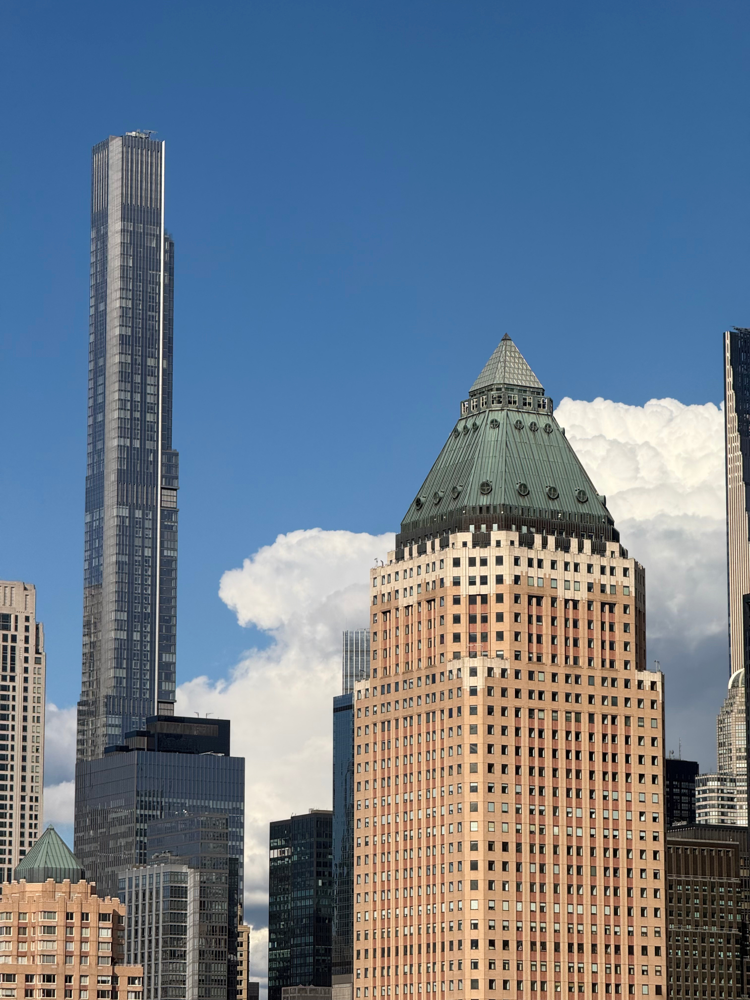
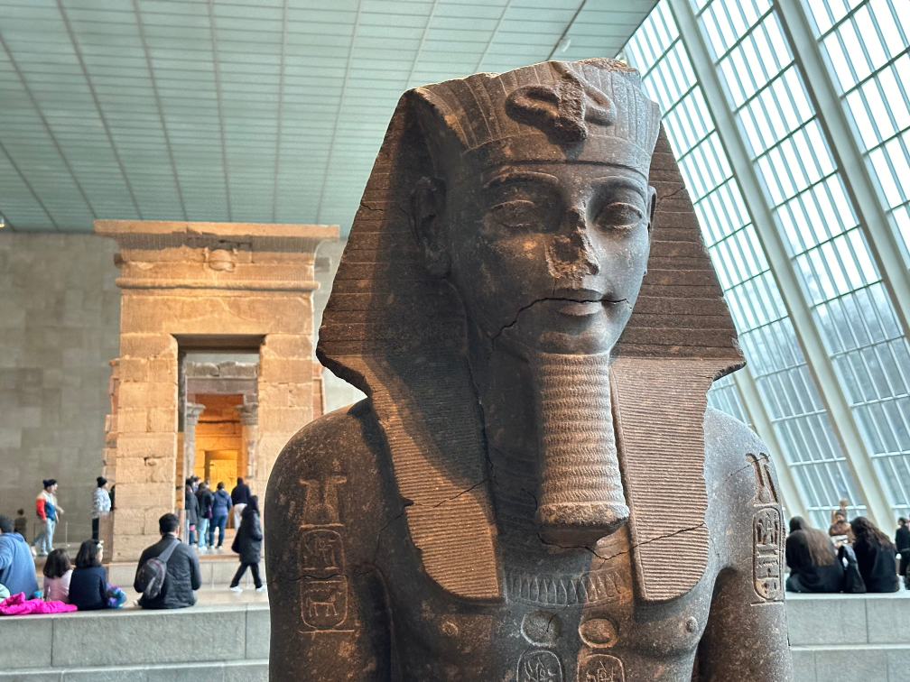
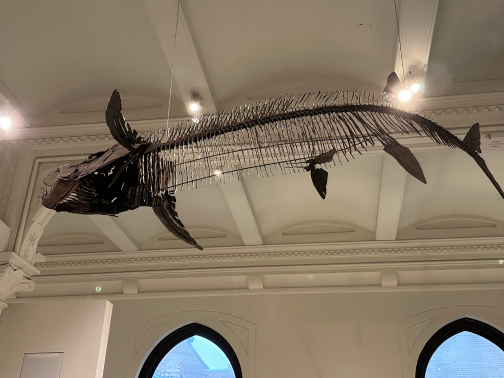
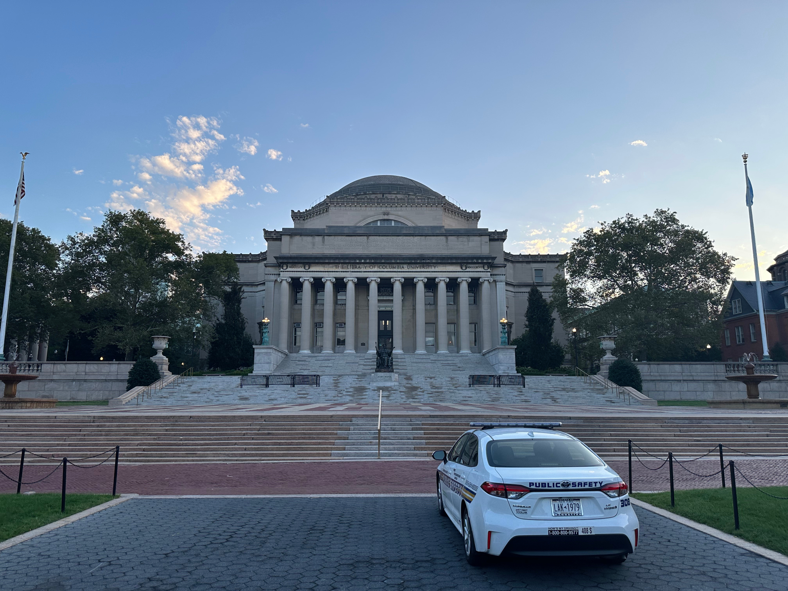

About New York City
Welcome to New York City. This website will briefly introduce the city itself. You can also wartch some videos about NYC. I hope this will help you know this city better!
New York City is the largest city in the world. It is in the United States, New York State. It has diverse culture and delicious food. There are also top universities for students to learn knowledge. The headquarter of the United Natiuons is also in NYC. It is no exaggeration to say that New York City is the center of the world.
Museums in NYC
There are amazing museums in NYC.
The Metropolitan Museum of Art

The Metropolitan Museum of Art is one of the biggest museums in the world. It is founded in 1870 and has more than two million art works. It has diverse topic: Ancient Egypt, Ancient India, Ancient Greece, and Ancient China. Besides, it has many beautiful paintings.
American Museum of Natural History

The American Museum of Natural History is one of the biggest natural history museum in the world. It has huge amount of collections, from fossil fields to diamonds. Besides, it has space center that helps people know more about the universe.
Top Universities in NYC
New York City has top Universities.
New York University
NYU is an excellent university. It is near Washington Square Park. It is famous for diversity. You can meet different people from different countries here. It remains as an expert in the field such as film and business.
Columbia University

Columbia is in Morningside Heights. It is also an excellent university and belongs to Ivy League. It is famous for its advantage in history, politics, business etc. It is a dream school for many students.